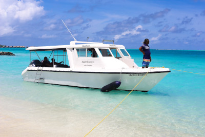

✈️ Traveling to and around Taniti
Getting To & From Taniti
Air Travel
Most visitors arrive on Taniti by air through our island airport. Currently, our facilities accommodate small jets and propeller planes with regular connections from major regional hubs. We're excited to announce an ongoing expansion project that will allow larger jets to land on the island within the next few years, making Taniti even more accessible to international travelers.
Airlines Serving Taniti
Several regional carriers offer regular flights to Taniti with connections through major Pacific hubs. Flight times vary seasonally, with increased frequency during peak tourist months. We recommend booking flights 3-4 months in advance for the best fares, especially if traveling during holiday periods.
Cruise Ship Arrivals
Taniti welcomes a small cruise ship that docks in Yellow Leaf Bay for one night per week. This provides a brief but enchanting introduction to our island. Cruise passengers often return for longer stays after getting a taste of Taniti's natural beauty and warm hospitality. The ship typically arrives Wednesday morning and departs Thursday afternoon, allowing passengers a full day to explore Taniti City and nearby attractions.
Entry Requirements
Visitors to Taniti must have a valid passport with at least six months remaining before expiration. Most nationalities receive a 30-day tourist visa upon arrival at no charge. Travelers planning extended stays should contact the Tanitian Embassy or Consulate in their home country for information about longer-term visas.
Customs & Immigration
Upon arrival, visitors will proceed through our streamlined immigration and customs process. Fresh fruits, vegetables, and certain animal products are prohibited from entering the island to protect our delicate ecosystem. Prescription medications are permitted for personal use but should be carried in their original labeled containers.
Getting Around The Island
Public Transportation
Taniti City is served by a reliable network of public buses that operate daily from 5 a.m. to 11 p.m. These air-conditioned buses follow regular routes throughout the city with stops at major hotels, beaches, and attractions. Single rides cost $1.50 USD, or you can purchase a weekly unlimited pass for $25 USD from any bus driver or tourism office.
Private Bus Services
For travel beyond Taniti City, private bus services connect to villages and attractions throughout the island. These comfortable coaches run on scheduled routes with less frequency than city buses but provide access to remote beaches, the volcano, and rainforest trailheads. Schedules are available at your hotel and the main tourism office in Taniti City.
Taxi Services
Taxis are readily available in Taniti City and can be flagged down on main streets or called for pick-up. All official taxis are blue with a yellow stripe and display their registration number prominently. Fares are regulated, with trips within Taniti City typically costing $5-15 USD. For longer journeys, we recommend agreeing on the fare before departing.
Rental Vehicles
A local rental agency near the airport offers a fleet of well-maintained cars suitable for exploring the island at your own pace. Daily rates range from $45-75 USD depending on the vehicle type. An international driver's license is not required, but renters must be at least 21 years old with a valid driver's license from their home country. Remember that we drive on the right side of the road in Taniti.
Bicycle Rentals
Experience Taniti at a leisurely pace by renting a bicycle from several vendors in Taniti City and Merriton Landing. Hourly, daily, and weekly rates are available, with all rentals including required safety helmets (mandatory by law). Taniti City's flat terrain makes cycling an enjoyable and environmentally friendly way to explore urban areas. The coastal road offers spectacular ocean views for more adventurous cyclists.
Walking
Taniti City and the Merriton Landing area are both pleasantly walkable, with wide sidewalks and pedestrian zones. A picturesque waterfront promenade connects many popular destinations, making walking both practical and enjoyable. For safety, we recommend carrying water, wearing sun protection, and using marked crosswalks when navigating the city on foot.
